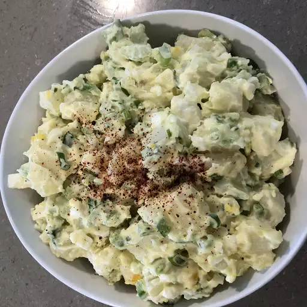

Potato Salad

Description
Just a good old fashioned, down home potato salad recipe that brings back
memories of picnics in the park and family gatherings. Wonderful as it is
or make it your own by adding additional ingredients of your choice.
Ingredients
- 3 cups elbow macaroni
- 1 ½ cups mayonnaise
- ⅓ large onion, minced
- ¼ cup chopped fresh parsley
- 2 tablespoons prepared
yellow mustard
- 2 teaspoons rice vinegar
- 1 teaspoon white sugar, or
more to taste
- ¾ teaspoon celery seed
- ½ teaspoon salt
- 3 hard-cooked eggs, chopped
Steps
-
Bring a large pot of water to a boil. Add potatoes, and cook for 15 to
20 minutes, or until tender but still firm. Drain, cool and cut into
cubes.
-
Place eggs in a saucepan and cover with cold water. Bring water to a
boil and immediately remove from heat. Cover and let eggs stand in hot
water for 10 to 12 minutes. Remove from hot water, cool, peel and chop.
-
In a large bowl, combine chopped potatoes and eggs. Mix together
mayonnaise, chopped onion, green onion, green pepper, and celery. Season
with salt and pepper, then mix well. Cover, and refrigerate for several
hours or overnight.
Return To Main Page